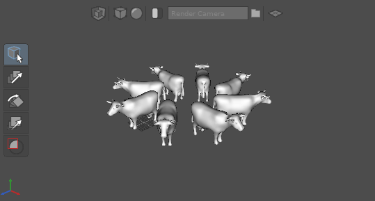

Adding a Menu Item¶
Introduction¶
Rumour has it some other application has a feature for creating equestrian playthings on demand. Here we’ll address this deficiency in Gaffer while taking the opportunity to learn about adding menu items.
Creating our script¶
If you’ve already read the Configuration Files Tutorial, then you’ll know we can add features to Gaffer by creating files it runs automatically on startup. We’ll create our script in the following file, and gaffer will load it each time it runs :
~/gaffer/startup/gui/iWantAPony.py
Creating the menu item¶
We want our menu item to be easily accessible to the user, so we’ll put it in the main menu for the application, which is hosted in the script window.
GafferUI.ScriptWindow.menuDefinition( application ).append( "/Help/I Want A Pony", { "command" : __iWantAPony } )
You’ll find that most user interfaces in Gaffer can be extended with similar ease. In this case we’ve simply
specified the path to the menu item, and specified that it should run a python function called __iWantAPony - we’ll
define that in the next section.
Tip
Here we’re concentrating on the main menu, but you’ll find examples for adding menu items to the NodeGraph, NodeEditor and more in Gaffer’s own configuration files
Creating some nodes¶
We want to get on with the business of creating some nodes, but first we have to know where to create them. Gaffer can have multiple files (scripts) open at once, so we need to determine which one to operate on right now. We’ll do that based on which window our menu was invoked from. Fortunately that turns out to be quite easy :
def __iWantAPony( menu ) :
scriptWindow = menu.ancestor( GafferUI.ScriptWindow )
script = scriptWindow.scriptNode()
We also want the action performed by the menu item to be undoable - looking after a pony is a big responsibility after all. We do this by using an UndoContext to wrap everything we do into a single undoable step.
with Gaffer.UndoContext( script ) :
...
Now we can create a SceneReader node to load a model, set the values of its plugs, and add it to the script.
read = GafferScene.SceneReader( "Cow" )
read["fileName"].setValue( "${GAFFER_ROOT}/resources/cow/cow.scc" )
script.addChild( read )
The astute reader may have noticed that the model looks suspiciously bovine, and may not quite fulfil the user’s request, but it will on the other hand provide a valuable lesson : you can’t always get what you want. Let’s see if we can offset the disappointment by substituting quantity for quality.
duplicate = GafferScene.Duplicate( "Herd" )
duplicate["target"].setValue( "/cow" )
duplicate["copies"].setValue( 7 )
duplicate["transform"]["translate"]["x"].setValue( 16 )
duplicate["transform"]["rotate"]["y"].setValue( 45 )
duplicate["in"].setInput( read["out"] )
script.addChild( duplicate )
Finally, we can select the newly created scene so the user is plainly aware of their gift.
script.selection().clear()
script.selection().add( duplicate )

And there we have it. Perhaps not quite suitable for show jumping but nevertheless a valuable source of milk, cheese and finally meat.
The whole script¶
Here’s the whole script in all its glory.
import Gaffer
import GafferUI
import GafferScene
def __iWantAPony( menu ) :
scriptWindow = menu.ancestor( GafferUI.ScriptWindow )
script = scriptWindow.scriptNode()
with Gaffer.UndoContext( script ) :
read = GafferScene.SceneReader( "Cow" )
read["fileName"].setValue( "${GAFFER_ROOT}/resources/cow/cow.scc" )
script.addChild( read )
duplicate = GafferScene.Duplicate( "Herd" )
duplicate["target"].setValue( "/cow" )
duplicate["copies"].setValue( 7 )
duplicate["transform"]["translate"]["x"].setValue( 16 )
duplicate["transform"]["rotate"]["y"].setValue( 45 )
duplicate["in"].setInput( read["out"] )
script.addChild( duplicate )
script.selection().clear()
script.selection().add( duplicate )
GafferUI.ScriptWindow.menuDefinition(application).append( "/Help/I Want A Pony", { "command" : __iWantAPony } )